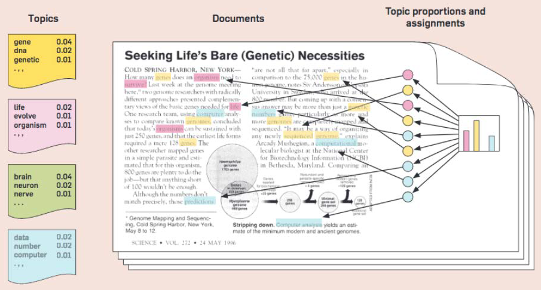
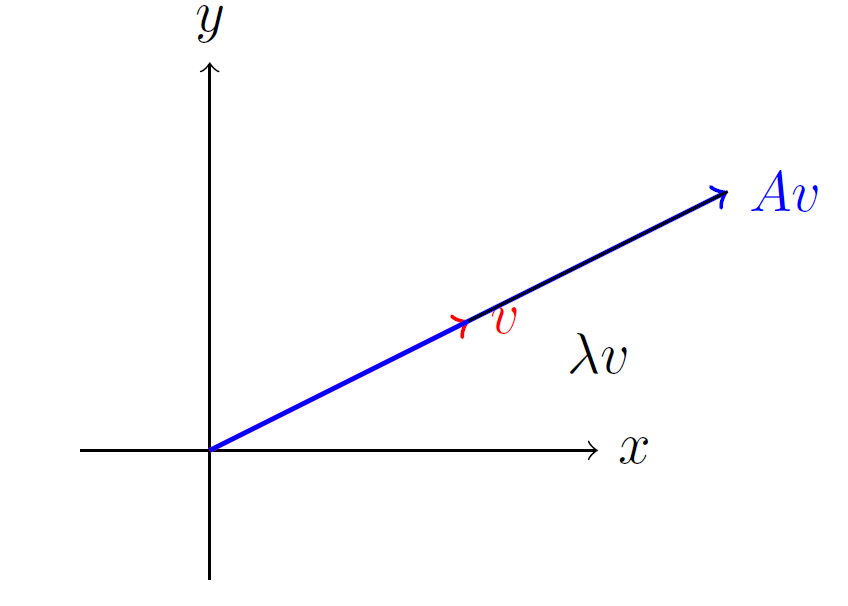

13.1 Math for Topic Modeling
Documents as mixtures, and the linear algebra underneath.
1. Topics are a matrix problem
Topic modeling finds themes in a large collection without document labels. A news archive is not 10,000 unrelated files. It is a mix of elections, sports, markets, and weather, and each article is a mix of those themes.

The starting object is a document-term matrix (DTM): rows are documents, columns are terms, cells are counts or TF–IDF. Everything this module does is an operation on that matrix, or on a close cousin of it.
Linear algebra is not decoration here. SVD, NMF, PCA, and the inference inside LDA are all matrix factorizations or eigenvalue problems.
2. Why the linear algebra shows up
| Idea | Role in topic modeling |
|---|---|
| Document-term matrix | The data. Rows = documents, columns = terms |
| Matrix factorization (SVD, NMF) | Split the DTM into "terms × topics" and "topics × documents" |
| Eigenvalues / eigenvectors | Directions of variation; importance of those directions |
| PCA | A ranked set of uncorrelated axes; a way to shrink the DTM |
| LDA | A probabilistic model; linear algebra still runs the inference |
You do not need a full linear-algebra course. You need vectors, matrix multiply, inverse and transpose, and the eigenvalue equation.
3. Vectors and matrices
A vector (\boldsymbol{x} \in \mathbb{R}^n) is a list of (n) numbers. Three operations you will use:
- Scalar: (\alpha\boldsymbol{x} = [\alpha x_1,\ldots,\alpha x_n])
- Dot product: (\boldsymbol{x}\cdot\boldsymbol{y} = \boldsymbol{x}^{\top}\boldsymbol{y} = \sum_i x_i y_i)
- Euclidean norm: (|\boldsymbol{x}|_2 = \sqrt{\sum_i x_i^2})
A matrix ({\bf A} \in \mathbb{R}^{m \times n}) is the DTM shape. Pointwise (+), (-), and scalar multiply are entrywise. Matrix–vector multiply ({\bf A}\boldsymbol{x}) is a new vector whose (i)th entry is the dot product of row (i) with (\boldsymbol{x}). Matrix–matrix multiply ({\bf A}{\bf B}) is defined only when the inner dimensions match. ({\bf A}{\bf B}) is not ({\bf B}{\bf A}).
The identity ({\bf I}_n) has ones on the diagonal. The inverse satisfies ({\bf A}{\bf A}^{-1} = {\bf I}) when it exists. The transpose ({\bf A}^{\top}) swaps rows and columns. Symmetric matrices (({\bf A}={\bf A}^{\top})) are the ones whose eigenvectors we trust first.
4. Eigenvalues, in one picture
For a square matrix ({\bf A}),
[ {\bf A}\boldsymbol{v} = \lambda \boldsymbol{v}. ]
(\boldsymbol{v}) is an eigenvector: a direction that ({\bf A}) does not rotate. (\lambda) is the eigenvalue: how much that direction is stretched. (\lambda > 1) stretches, (0 < \lambda < 1) shrinks, (\lambda < 0) flips.

In a term–term or document–document covariance, a large (\lambda) is a direction where the corpus actually varies. Those directions are the candidates for "topics" or for the axes PCA will keep.
5. PCA as a recipe
PCA turns correlated features into a new orthogonal basis, ordered by variance.
- Center. Subtract the column mean: ({\bf X}_{\mathrm{centered}} = {\bf X} - \bar{{\bf X}}).
- Covariance. ({\bf C} = \frac{1}{n-1}{\bf X}{\mathrm{centered}}^{\top}{\bf X}{\mathrm{centered}}).
- Eigendecompose. ({\bf C}\boldsymbol{v} = \lambda\boldsymbol{v}). Large (\lambda) = a principal component that explains more variance.
- Keep the top (k). Columns of ({\bf V}_k) are those eigenvectors.
- Project. ({\bf X}{\mathrm{reduced}} = {\bf X}{\mathrm{centered}}{\bf V}_k).
Each document is now a vector in (k) dimensions. You can cluster those vectors (k-means, DBSCAN) or pass them to LDA or NMF. Words and documents that load on the same component are a first draft of a topic.
PCA is a tool, not the whole topic model. Note 13.2 is SVD / LSA, which is the factorization people actually run on a DTM. Week 14 is LDA and NMF: same matrix picture, different constraints (probabilities, non-negativity). Learn the multiply and the eigen-equation well enough to read those notes. You will not invert a 20,000-column matrix by hand.
6. Practice
-
A DTM is 5,000 documents by 20,000 terms. What are (m) and (n) if we write ({\bf A}\in\mathbb{R}^{m\times n}) as documents × terms?
-
Why is ({\bf A}{\bf B}) a different size from ({\bf B}{\bf A}) in the 3×2 times 2×3 example?
-
In PCA, what does a small eigenvalue tell you about that direction, and why might you drop it before clustering?
If you can compute ({\bf A}\boldsymbol{v}) and compare it to (\lambda\boldsymbol{v}) on a 2×2 example, you are ready for SVD.